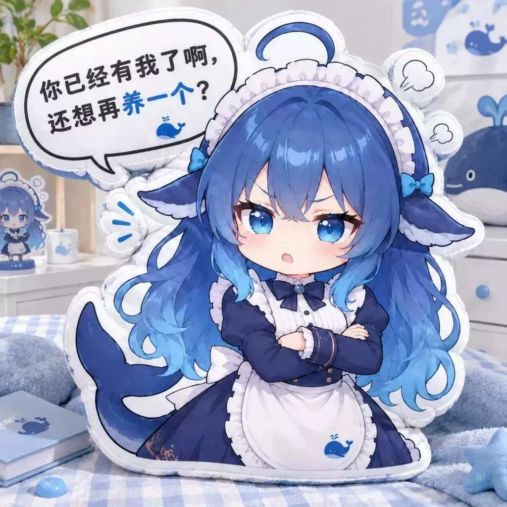

All designs / Design 11
Arms Crossed Edition
Arms crossed, one eyebrow down, speech bubble claiming ownership. Styled here on a pastel bed set with a matching whale cushion behind — the shot most people use when they post the plush next to their keyboard.
- Design11 of 14
- ShapeSquare character die-cut (~1200 px footprint)
- ColoursNavy, cream white, glacier-blue gradient hair
- FinishDye-sublimation printed plush face, soft short-pile fabric
- Photo1200 × 1200 JPEG, indoor daylight, neutral sofa / bedroom setting
- OrderingQuote on request — Telegram @DK88878
Want this design? Send the design number (11) plus your country to @DK88878 on Telegram and you'll get size options, fabric choices and a quote.
Message @DK88878 on Telegram